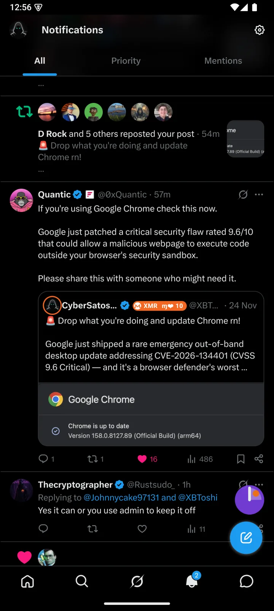
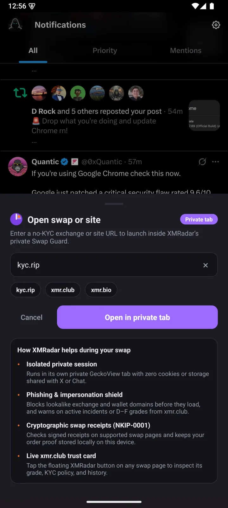
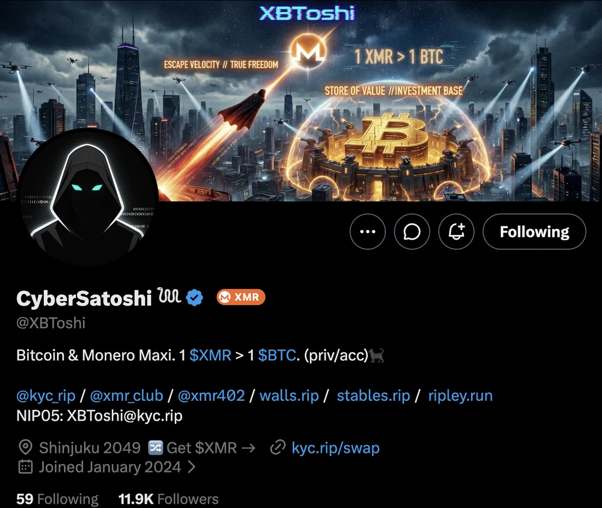

satoshi.fanXMR ɱ❤ 10· 2h
Ran a Monero node at home for a year. Notes on bandwidth, disk, and what broke.
Reply
Repost
ɱ 0.006 ✓
♥ 14
XMRadar shows who takes Monero on X, lets you tip them from your own wallet or send a Monero like, checks swap sites before you deposit, and copies posts to Nostr.
Free and open source (GPL-3.0). Holds no Monero keys and no funds.An XMR badge across timelines, quoted posts, notifications, people lists, profiles and hover cards for anyone who published a Monero address on Nostr or verified it on xmr.bio. Click it to tip from your own wallet; a Xap records the tip on Nostr, separating recipient-confirmed totals from claimed ones.
A heart next to the Xap button sends the author a Monero like over Nostr. Hold it (or press Shift+Enter) to like the post on X too. Accounts with xos get a thin orange ring on their avatar and the total in their badge, counted by xmr.bio. Received xos count only from Monero people and can notify you along with your Xaps.
Four steps: a Nostr key, your X handle, your Monero address, and one tweet that links them. No signer? XMRadar makes a Nostr key for you, kept in this browser, and lists you on xmr.bio (optional) with an OpenAlias wallet name.
On an exchange's order page, XMRadar checks the signed NKIP-0001 receipt, or the operator's letter of guarantee (PGP or MistProof), against the addresses on the page and in what you copy. A verified copy is saved in your browser for disputes. The toolbar shows the site's xmr.club grade, with warnings for open incidents and a warning page before a lookalike site loads.
Exchange data from xmr.club, licensed CC BY 4.0.
A monero-signin: link opens XMRadar's own window with the site, account, address, callback, and full message. Expired or mismatched links are refused. Your wallet signs; guides for Feather, GUI, Cake, CLI, and RPC included.
A throwaway address in one click for sign-ups. New mail shows up as a notification with verification codes already pulled out.
qz4r8m@ghostmail.kyc.rip42 minUse X's share menu (Copy to Nostr), right-click a post on X, Bluesky, Mastodon or any page, or press Alt+Shift+N. Text, images, whole X threads, and quoted shots go to relays via your NIP-07 or NIP-55 signer.
Opt-in pen button inside X's composer (desktop and mobile) to proofread or tighten a draft or highlighted selection using local Ollama / LM Studio or your own API key — off by default. Plus Menu → Chat opens chat.xmr.club in Chrome's side panel, Firefox's sidebar, or its own isolated tab on Android.
Built on Mozilla GeckoView with XMRadar's Firefox MV3 WebExtension bundled inside. Keep X in its own isolated session, open swap sites in a private Swap Guard tab, and sign Nostr events through your own Android signer — with zero Google Play Services, zero Firebase, and zero trackers.
arm64-v8a APK from GitHub Releases (works cleanly with Obtainium).

yourhandle.oa.xmr.bio, for OpenAlias wallets.


~ means claimed by the tippers, not yet confirmed).
XMRadar runs locally in your browser or GeckoView shell, with no account. Its own site is asked only for the latest version number; other services are asked only for the features you use. The code is open, so you can check every claim.
Works with any Monero wallet that opens monero: links. A Nostr signer (NIP-07 on desktop, NIP-55 such as Amber or Ripley Vault on Android) is optional for badges, xos and Xaps, and required to copy posts to Nostr.
Official signed listing for Firefox 140+. Click Grant access on Options after installing.
Hardened GeckoView app with isolated X, Chat and Private Swap tabs, NIP-55 signing, and zero GMS.
Official signed listing for Chrome, Brave, Edge, and Chromium browsers.